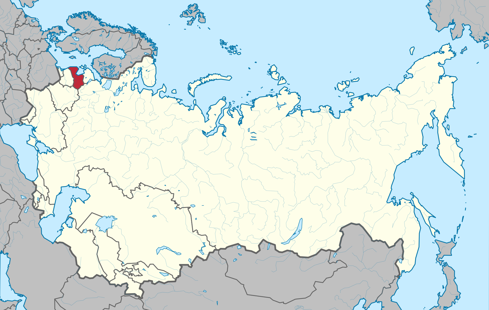

Lithuanian SSR
The Latvian Soviet Socialist Republic (Latvian. Latvijas Padomju Sociālistiskā Republika) is one of the republics of the Soviet Union. The area is 64.58 thousand km². Population - 2 623 000 people (1986). The capital is Riga.
Map of the Lithuanian SSR from October 27, 1924 - August 31, 1991
[BACK TO HOME] [BACK TO REPUBLICS]